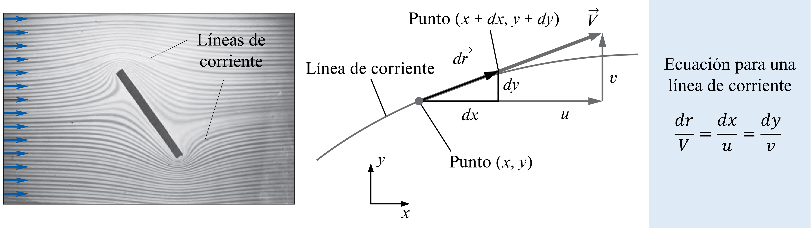
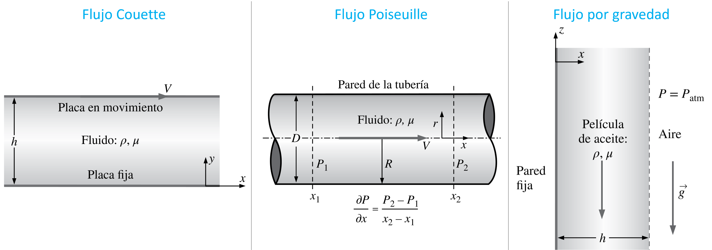

Análisis de las ecuaciones de Navier-Stokes
Contents
8. Análisis de las ecuaciones de Navier-Stokes#
8.1. Introducción#
En la unidad anterior dedujimos las ecuaciones de conservación de masa y momento lineal en su forma diferencial. Respecto a esta última, derivamos las ecuaciones de Navier-Stokes, las cuales corresponden a un caso particular para:
Fluido incompresible
Fluido Newtoniano
Estas ecuaciones son la base de la mecánica de fluidos. Técnicamente, cualquier problema de la mecánica de fluidos asociado a las condiciones incompresible-newtoniano puede ser caracterizado a partir de la solución de estas ecuaciones. Sin embargo, la complejidad asociada al número de incógnitas, variables independientes, y sobre todo a su condición no-lineal, hacen imposible su solución, salvo en casos particulares.
En esta unidad analizaremos estas ecuaciones y mostraremos su comportamiento para estos casos.
8.2. Aproximación para regiones no viscosas#
Es interesante analizar las ecuaciones de Navier-Stokes en regiones no viscosas. Como veremos, a partir de este análisis podemos evaluar la conservación de energía a lo largo de una línea de corriente.
Primero, revisaremos algunos conceptos.
8.2.1. Líneas de corriente#
Una línea de corriente es una curva que, en todas partes, es tangente a la velocidad local instantánea. Son útiles para identificar el movimiento del fluido en todo el campo de flujo.
{kind=link}
8.2.2. Vorticidad y rotacionalidad#
Es importante aclarar el concepto de rotación de una partícula fluida. Un flujo es rotacional si \(\nabla\times\vec{V} \neq 0\). En este caso, los elementos de fluido giran.

Notar que no todos los flujos circulares son rotacionales:

8.2.3. Conservación de energía en regiones no viscosas#
Como revisamos en la unidad de flujo externo el desarrollo de la capa límite alrededor del cuerpo permite separar el flujo en una región viscosa y otra no viscosa

En la región fuera de la capa límite, las fuerzas viscosas son despresiables, es decir \(\mu\nabla^2\vec{V} \approx 0\), y la ecuación de Navier-Stokes se convierte en la ecuación de Euler:
A partir de las siguientes identidades:
\(\vec{g} = - g\hat{z} = - g\nabla(z) = \nabla(-gz)\)
\(\vec{V}\cdot\nabla\vec{V} = \nabla\left(\frac{1}{2} V^2\right) - \vec{V}\times\nabla\times\vec{V}\) (donde \(V = |\vec{V}|\))
Tenemos:
Luego, si integramos esta ecuación a lo largo de una línea de corriente:
donde:
\(\vec{r}\) corresponde al vector de posición a lo largo de la línea de corriente
El lado derecho de la ecuación \(\int\vec{V}\times\nabla\times\vec{V}\cdot d\vec{r} = 0\), por definición de línea de corriente.
Para un escalar \(f\), tenemos que \(\nabla f\cdot d\vec{r} = df\).
La ecuación (8.2) es la ecuación de Bernoulli a lo largo de una línea de corriente en la región no viscosa. La ecuación indica que, a lo largo de una línea de corriente en la región no viscosa, la energía se conserva. Esta relación es de utilizadad, por ejemplo, para analizar los efectos de sustentación en perfiles aerodinámicos.
8.3. Soluciones de N-S y continuidad#
A pesar de su complejidad, existen problemas sencillos donde las ecuaciones de Navier-Stokes en conjunto con la ecuación de continuidad tienen solución analítica.
Para poder resolver estas ecuaciones es fundamental aplicar las condiciones iniciales y de borde adecuadas. Si analizamos estas ecuaciones involucradas, notamos que tenemos que tenemos derivadas de primer orden en el tiempo (\(t\)) y derivadas de segundo orden en el espacio (\(x\), \(y\), \(z\)). En general, necesitaremos:
Una condición inicial
Dos condiciones de borde en \(x\), \(y\), \(z\).
Considerando las incognitas \(u\), \(v\), \(w\) y \(p\), esto nos da como resultado 4 condiciones iniciales y 12 condiciones de borde.
En la práctica, sin embargo, es común aplicar supuestos que permiten reducir el tamaño de la ecuación diferencial.
8.3.1. Supuestos típicos#
8.3.1.1. Flujo estacionario#
Este supuesto asume que la variación temporal es despreciable. Las ecuaciónes se simplifican a:
8.3.1.2. Flujo bidimensional#
Este supuesto es útil para reducir una de las tres componentes de la velocidad. En coordenadas cartesianas, la bidimensionalidad permitiría, por ejemplo, ignorar la componente \(z\), es decir \(w = 0\). Las ecuaciones de continuidad y Navier-Stokes se simplifican a:
Encuación de continuidad flujo incompresible
Navier-Stokes
Notar que, en este caso, si \(g_z \neq 0\) la componente \(z\) de las ecuaciones de Navier-Stokes quedaría como:
Que corresponde a la ecuación para presión hidrostática.
El razonamiento análogo en coordenadas cilindricas se denomina, flujo con simetría axial o axial-simétrico. En este caso \(\frac{\partial}{\partial \theta} = 0\), y las ecuaciones se simplifican a:
Encuación de continuidad flujo incompresible
Navier-Stokes
8.3.1.3. Flujo desarrollado#
Este supuesto se aplica para despreciar la tasa de cambio en la dirección paralela a alguna de las componentes de velocidad.
El concepto nace del flujo en tuberías, donde la tasa de cambio de la componente longitudinal, \(\frac{\partial u_z}{\partial z} \approx 0\) despues de la región de desarrollo del flujo.

Sin embargo, se puede aplicar a otros problemas como veremos más adelante.
8.3.2. Condiciones de borde típicas#
Una vez establecidos los supuestos, es necesario implementar las condiciones de borde necesarias para resolver el problema.
Las más comunes son.

8.3.3. Flujos característicos#
Existen 3 problemas característicos que pueden ser resueltos analiticamente a partir de las ecuaciones de continuidad y Navier-Stokes.
{kind=link}
La solución a estos problemas se verá en la sesión de cátedra.
8.4. Referencias#
Çengel Y. A. y Cimbala M. J. Mecánica de Fluidos: Fundamentos y Aplicaciones, 4ta Ed., McGraw Hill, 2018
Capitulo 9. Análisis diferencial de flujo de fluidos
Capitulo 10. Soluciones aproximadas de la ecuación de Navier-Stokes
White F. M. Mecánica de Fluidos, 5ta Ed., McGraw Hill, 2004
Capítulo 4. Relaciones diferenciales para una partícula fluida